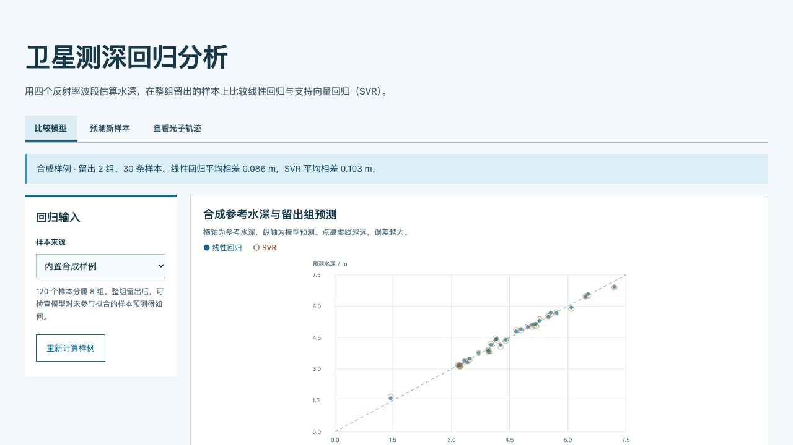

样本与分组评价
检查波段量程、非负水深和采集时间差；按场景、轨道或空间块分组留出测试集，归一化仅在训练组拟合。
用合成样例或自己的波段样本比较测深模型，查看留出组的预测与参考水深。
检查波段量程、非负水深和采集时间差；按场景、轨道或空间块分组留出测试集，归一化仅在训练组拟合。
比较线性回归和支持向量回归，导出评价指标、模型及逐样本预测；保留输入与模型摘要，批量预测标记波段外推和负值输出。
报告保留训练／测试组、RMSE、MAE、R²和逐样本预测；模型导出包含归一化器，新样本预测标记超出训练范围的输入。

比较模型 → 试算三条新样本或导入自己的 CSV → 查看真实光子轨迹。
合成样例按组留出测试，归一化只使用训练样本。
| 模型 | RMSE / m | MAE / m | R² |
|---|---|---|---|
| linear | 0.1164 | 0.0858 | 0.9907 |
| svr | 0.1384 | 0.1025 | 0.9869 |
Li, Fengyu 发布的珊瑚礁测深数据：33,688条光子记录，6个波束。以下显示原始MSL高程；回归演示中的四波段配对输入需另行完成匹配。
| 字段 | 实际范围 |
|---|---|
| 纬度 | 16.92631—16.99637 |
| 经度 | 112.20544—112.33531 |
| MSL高程 / m | -33.242—2.319 |